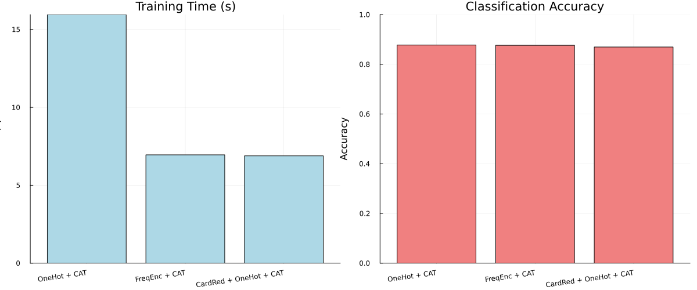

Adult Income Prediction: Comparing Categorical Encoders
Julia version is assumed to be 1.10.*
This demonstration is available as a Jupyter notebook or julia script (as well as the dataset) here.
This tutorial compares different categorical encoding approaches on adult income prediction. We'll test OneHot, Frequency, and Cardinality Reduction encoders with CatBoost classification.
Why compare encoders? Categorical variables with many levels (like occupation, education) can create high-dimensional sparse features. Different encoding strategies handle this challenge differently, affecting both model performance and training speed.
High Cardinality Challenge: We've added a synthetic feature with 100 categories to demonstrate how encoders handle extreme cardinality - a common real-world scenario with features like customer IDs, product codes, or geographical subdivisions.
using Pkg;
Pkg.activate(@__DIR__);
using MLJ, DataFrames, ScientificTypes
using Random, CSV, StatsBase, Plots, BenchmarkTools Activating project at `~/Documents/GitHub/MLJTransforms/docs/src/tutorials/adult_example`
Import scitypes from MLJ to avoid any package version skew
using MLJ: OrderedFactor, Continuous, MulticlassLoad and Prepare Data
Load the Adult Income dataset. This dataset contains demographic information and the task is to predict whether a person makes over 50K per year.
Load data with header and rename columns to the expected symbols
df = CSV.read("./adult.csv", DataFrame; header = true)
rename!(
df,
[
:age,
:workclass,
:fnlwgt,
:education,
:education_num,
:marital_status,
:occupation,
:relationship,
:race,
:sex,
:capital_gain,
:capital_loss,
:hours_per_week,
:native_country,
:income,
],
)
first(df, 5)| Row | age | workclass | fnlwgt | education | education_num | marital_status | occupation | relationship | race | sex | capital_gain | capital_loss | hours_per_week | native_country | income |
|---|---|---|---|---|---|---|---|---|---|---|---|---|---|---|---|
| Int64 | String31 | Int64 | String15 | Int64 | String31 | String31 | String15 | String31 | String7 | Int64 | Int64 | Int64 | String31 | String7 | |
| 1 | 25 | Private | 226802 | 11th | 7 | Never-married | Machine-op-inspct | Own-child | Black | Male | 0 | 0 | 40 | United-States | <=50K |
| 2 | 38 | Private | 89814 | HS-grad | 9 | Married-civ-spouse | Farming-fishing | Husband | White | Male | 0 | 0 | 50 | United-States | <=50K |
| 3 | 28 | Local-gov | 336951 | Assoc-acdm | 12 | Married-civ-spouse | Protective-serv | Husband | White | Male | 0 | 0 | 40 | United-States | >50K |
| 4 | 44 | Private | 160323 | Some-college | 10 | Married-civ-spouse | Machine-op-inspct | Husband | Black | Male | 7688 | 0 | 40 | United-States | >50K |
| 5 | 18 | ? | 103497 | Some-college | 10 | Never-married | ? | Own-child | White | Female | 0 | 0 | 30 | United-States | <=50K |
Clean the data by removing leading/trailing spaces and converting income to binary:
for col in [:workclass, :education, :marital_status, :occupation, :relationship,
:race, :sex, :native_country, :income]
df[!, col] = strip.(string.(df[!, col]))
endConvert income to binary (0 for <=50K, 1 for >50K)
df.income = ifelse.(df.income .== ">50K", 1, 0);Let's a high-cardinality categorical feature to showcase encoder handling Create a realistic frequency distribution: A1-A3 make up 90% of data, A4-A500 make up 10%
Random.seed!(42)
high_card_categories = ["A$i" for i in 1:500]
n_rows = nrow(df)
n_frequent = Int(round(0.9 * n_rows)) # 90% for A1, A2, A3
n_rare = n_rows - n_frequent # 10% for A4-A500
frequent_samples = rand(["A1", "A2", "A3"], n_frequent)
rare_categories = ["A$i" for i in 4:500]
rare_samples = rand(rare_categories, n_rare);Combine and shuffle
all_samples = vcat(frequent_samples, rare_samples)
df.high_cardinality_feature = all_samples[randperm(n_rows)];Coerce categorical columns to appropriate scientific types. Apply explicit type coercions using fully qualified names
type_dict = Dict(
:income => OrderedFactor,
:age => Continuous,
:fnlwgt => Continuous,
:education_num => Continuous,
:capital_gain => Continuous,
:capital_loss => Continuous,
:hours_per_week => Continuous,
:workclass => Multiclass,
:education => Multiclass,
:marital_status => Multiclass,
:occupation => Multiclass,
:relationship => Multiclass,
:race => Multiclass,
:sex => Multiclass,
:native_country => Multiclass,
:high_cardinality_feature => Multiclass,
)
df = coerce(df, type_dict);Let's examine the cardinality of our categorical features:
categorical_cols = [:workclass, :education, :marital_status, :occupation,
:relationship, :race, :sex, :native_country, :high_cardinality_feature]
println("Cardinality of categorical features:")
for col in categorical_cols
n_unique = length(unique(df[!, col]))
println(" $col: $n_unique unique values")
endCardinality of categorical features:
workclass: 9 unique values
education: 16 unique values
marital_status: 7 unique values
occupation: 15 unique values
relationship: 6 unique values
race: 5 unique values
sex: 2 unique values
native_country: 42 unique values
high_cardinality_feature: 500 unique values
Split Data
Separate features (X) from target (y), then split into train/test sets:
y, X = unpack(df, ==(:income); rng = 123);
train, test = partition(eachindex(y), 0.8, shuffle = true, rng = 100);Setup Encoders and Model
Load the required models and create different encoding strategies:
CatBoostClassifier = @load CatBoostClassifier pkg = CatBoostCatBoost.MLJCatBoostInterface.CatBoostClassifierEncoding Strategies:
- OneHotEncoder: Creates binary columns for each category
- FrequencyEncoder: Replaces categories with their frequency counts
In case of the one-hot-encoder, we worry when categories have high cardinality as that would lead to an explosion in the number of features.
card_reducer = MLJTransforms.CardinalityReducer(
min_frequency = 0.15,
ordered_factor = true,
label_for_infrequent = Dict(
AbstractString => "OtherItems",
Char => 'O',
),
)
onehot_model = OneHotEncoder(drop_last = true, ordered_factor = true)
freq_model = FrequencyEncoder(normalize = false, ordered_factor = true)
cat = CatBoostClassifier();Create three different pipelines to compare:
pipelines = [
("CardRed + OneHot + CAT", card_reducer |> onehot_model |> cat),
("OneHot + CAT", onehot_model |> cat),
("FreqEnc + CAT", freq_model |> cat),
]3-element Vector{Tuple{String, MLJBase.ProbabilisticPipeline{N, MLJModelInterface.predict} where N<:NamedTuple}}:
("CardRed + OneHot + CAT", ProbabilisticPipeline(cardinality_reducer = CardinalityReducer(features = Symbol[], …), …))
("OneHot + CAT", ProbabilisticPipeline(one_hot_encoder = OneHotEncoder(features = Symbol[], …), …))
("FreqEnc + CAT", ProbabilisticPipeline(frequency_encoder = FrequencyEncoder(features = Symbol[], …), …))Evaluate Pipelines with Proper Benchmarking
Train each pipeline and measure both performance (accuracy) and training time using @btime:
results = DataFrame(pipeline = String[], accuracy = Float64[], training_time = Float64[]);Prepare results DataFrame
for (name, pipe) in pipelines
println("Training and benchmarking: $name")
# Train once to compute accuracy
mach = machine(pipe, X, y)
MLJ.fit!(mach, rows = train)
predictions = MLJ.predict_mode(mach, rows = test)
accuracy_value = MLJ.accuracy(predictions, y[test])
# Measure training time using @belapsed (returns Float64 seconds) with 5 samples
# Create a fresh machine inside the benchmark to avoid state sharing
training_time =
@belapsed MLJ.fit!(machine($pipe, $X, $y), rows = $train, force = true) samples = 5
println(" Training time (min over 5 samples): $(training_time) s")
println(" Accuracy: $(round(accuracy_value, digits=4))\n")
push!(results, (string(name), accuracy_value, training_time))
endTraining and benchmarking: CardRed + OneHot + CAT
[ Info: Training machine(ProbabilisticPipeline(cardinality_reducer = CardinalityReducer(features = Symbol[], …), …), …).
[ Info: Training machine(:cardinality_reducer, …).
[ Info: Training machine(:one_hot_encoder, …).
[ Info: Spawning 1 sub-features to one-hot encode feature :workclass.
[ Info: Spawning 3 sub-features to one-hot encode feature :education.
[ Info: Spawning 2 sub-features to one-hot encode feature :marital_status.
[ Info: Spawning 0 sub-features to one-hot encode feature :occupation.
[ Info: Spawning 3 sub-features to one-hot encode feature :relationship.
[ Info: Spawning 1 sub-features to one-hot encode feature :race.
[ Info: Spawning 1 sub-features to one-hot encode feature :sex.
[ Info: Spawning 2 sub-features to one-hot encode feature :native_country.
[ Info: Spawning 3 sub-features to one-hot encode feature :high_cardinality_feature.
[ Info: Training machine(:cat_boost_classifier, …).
[ Info: Training machine(ProbabilisticPipeline(cardinality_reducer = CardinalityReducer(features = Symbol[], …), …), …).
[ Info: Training machine(:cardinality_reducer, …).
[ Info: Training machine(:one_hot_encoder, …).
[ Info: Spawning 1 sub-features to one-hot encode feature :workclass.
[ Info: Spawning 3 sub-features to one-hot encode feature :education.
[ Info: Spawning 2 sub-features to one-hot encode feature :marital_status.
[ Info: Spawning 0 sub-features to one-hot encode feature :occupation.
[ Info: Spawning 3 sub-features to one-hot encode feature :relationship.
[ Info: Spawning 1 sub-features to one-hot encode feature :race.
[ Info: Spawning 1 sub-features to one-hot encode feature :sex.
[ Info: Spawning 2 sub-features to one-hot encode feature :native_country.
[ Info: Spawning 3 sub-features to one-hot encode feature :high_cardinality_feature.
[ Info: Training machine(:cat_boost_classifier, …).
[ Info: Training machine(ProbabilisticPipeline(cardinality_reducer = CardinalityReducer(features = Symbol[], …), …), …).
[ Info: Training machine(:cardinality_reducer, …).
[ Info: Training machine(:one_hot_encoder, …).
[ Info: Spawning 1 sub-features to one-hot encode feature :workclass.
[ Info: Spawning 3 sub-features to one-hot encode feature :education.
[ Info: Spawning 2 sub-features to one-hot encode feature :marital_status.
[ Info: Spawning 0 sub-features to one-hot encode feature :occupation.
[ Info: Spawning 3 sub-features to one-hot encode feature :relationship.
[ Info: Spawning 1 sub-features to one-hot encode feature :race.
[ Info: Spawning 1 sub-features to one-hot encode feature :sex.
[ Info: Spawning 2 sub-features to one-hot encode feature :native_country.
[ Info: Spawning 3 sub-features to one-hot encode feature :high_cardinality_feature.
[ Info: Training machine(:cat_boost_classifier, …).
[ Info: Training machine(ProbabilisticPipeline(cardinality_reducer = CardinalityReducer(features = Symbol[], …), …), …).
[ Info: Training machine(:cardinality_reducer, …).
[ Info: Training machine(:one_hot_encoder, …).
[ Info: Spawning 1 sub-features to one-hot encode feature :workclass.
[ Info: Spawning 3 sub-features to one-hot encode feature :education.
[ Info: Spawning 2 sub-features to one-hot encode feature :marital_status.
[ Info: Spawning 0 sub-features to one-hot encode feature :occupation.
[ Info: Spawning 3 sub-features to one-hot encode feature :relationship.
[ Info: Spawning 1 sub-features to one-hot encode feature :race.
[ Info: Spawning 1 sub-features to one-hot encode feature :sex.
[ Info: Spawning 2 sub-features to one-hot encode feature :native_country.
[ Info: Spawning 3 sub-features to one-hot encode feature :high_cardinality_feature.
[ Info: Training machine(:cat_boost_classifier, …).
Training time (min over 5 samples): 6.887171291 s
Accuracy: 0.8697
Training and benchmarking: OneHot + CAT
[ Info: Training machine(ProbabilisticPipeline(one_hot_encoder = OneHotEncoder(features = Symbol[], …), …), …).
[ Info: Training machine(:one_hot_encoder, …).
[ Info: Spawning 8 sub-features to one-hot encode feature :workclass.
[ Info: Spawning 15 sub-features to one-hot encode feature :education.
[ Info: Spawning 6 sub-features to one-hot encode feature :marital_status.
[ Info: Spawning 14 sub-features to one-hot encode feature :occupation.
[ Info: Spawning 5 sub-features to one-hot encode feature :relationship.
[ Info: Spawning 4 sub-features to one-hot encode feature :race.
[ Info: Spawning 1 sub-features to one-hot encode feature :sex.
[ Info: Spawning 41 sub-features to one-hot encode feature :native_country.
[ Info: Spawning 499 sub-features to one-hot encode feature :high_cardinality_feature.
[ Info: Training machine(:cat_boost_classifier, …).
[ Info: Training machine(ProbabilisticPipeline(one_hot_encoder = OneHotEncoder(features = Symbol[], …), …), …).
[ Info: Training machine(:one_hot_encoder, …).
[ Info: Spawning 8 sub-features to one-hot encode feature :workclass.
[ Info: Spawning 15 sub-features to one-hot encode feature :education.
[ Info: Spawning 6 sub-features to one-hot encode feature :marital_status.
[ Info: Spawning 14 sub-features to one-hot encode feature :occupation.
[ Info: Spawning 5 sub-features to one-hot encode feature :relationship.
[ Info: Spawning 4 sub-features to one-hot encode feature :race.
[ Info: Spawning 1 sub-features to one-hot encode feature :sex.
[ Info: Spawning 41 sub-features to one-hot encode feature :native_country.
[ Info: Spawning 499 sub-features to one-hot encode feature :high_cardinality_feature.
[ Info: Training machine(:cat_boost_classifier, …).
[ Info: Training machine(ProbabilisticPipeline(one_hot_encoder = OneHotEncoder(features = Symbol[], …), …), …).
[ Info: Training machine(:one_hot_encoder, …).
[ Info: Spawning 8 sub-features to one-hot encode feature :workclass.
[ Info: Spawning 15 sub-features to one-hot encode feature :education.
[ Info: Spawning 6 sub-features to one-hot encode feature :marital_status.
[ Info: Spawning 14 sub-features to one-hot encode feature :occupation.
[ Info: Spawning 5 sub-features to one-hot encode feature :relationship.
[ Info: Spawning 4 sub-features to one-hot encode feature :race.
[ Info: Spawning 1 sub-features to one-hot encode feature :sex.
[ Info: Spawning 41 sub-features to one-hot encode feature :native_country.
[ Info: Spawning 499 sub-features to one-hot encode feature :high_cardinality_feature.
[ Info: Training machine(:cat_boost_classifier, …).
[ Info: Training machine(ProbabilisticPipeline(one_hot_encoder = OneHotEncoder(features = Symbol[], …), …), …).
[ Info: Training machine(:one_hot_encoder, …).
[ Info: Spawning 8 sub-features to one-hot encode feature :workclass.
[ Info: Spawning 15 sub-features to one-hot encode feature :education.
[ Info: Spawning 6 sub-features to one-hot encode feature :marital_status.
[ Info: Spawning 14 sub-features to one-hot encode feature :occupation.
[ Info: Spawning 5 sub-features to one-hot encode feature :relationship.
[ Info: Spawning 4 sub-features to one-hot encode feature :race.
[ Info: Spawning 1 sub-features to one-hot encode feature :sex.
[ Info: Spawning 41 sub-features to one-hot encode feature :native_country.
[ Info: Spawning 499 sub-features to one-hot encode feature :high_cardinality_feature.
[ Info: Training machine(:cat_boost_classifier, …).
Training time (min over 5 samples): 15.952417041 s
Accuracy: 0.8775
Training and benchmarking: FreqEnc + CAT
[ Info: Training machine(ProbabilisticPipeline(frequency_encoder = FrequencyEncoder(features = Symbol[], …), …), …).
[ Info: Training machine(:frequency_encoder, …).
[ Info: Training machine(:cat_boost_classifier, …).
[ Info: Training machine(ProbabilisticPipeline(frequency_encoder = FrequencyEncoder(features = Symbol[], …), …), …).
[ Info: Training machine(:frequency_encoder, …).
[ Info: Training machine(:cat_boost_classifier, …).
[ Info: Training machine(ProbabilisticPipeline(frequency_encoder = FrequencyEncoder(features = Symbol[], …), …), …).
[ Info: Training machine(:frequency_encoder, …).
[ Info: Training machine(:cat_boost_classifier, …).
[ Info: Training machine(ProbabilisticPipeline(frequency_encoder = FrequencyEncoder(features = Symbol[], …), …), …).
[ Info: Training machine(:frequency_encoder, …).
[ Info: Training machine(:cat_boost_classifier, …).
Training time (min over 5 samples): 6.951079292 s
Accuracy: 0.8765
Sort by accuracy (higher is better) and display results:
sort!(results, :accuracy, rev = true)
results| Row | pipeline | accuracy | training_time |
|---|---|---|---|
| String | Float64 | Float64 | |
| 1 | OneHot + CAT | 0.877457 | 15.9524 |
| 2 | FreqEnc + CAT | 0.876536 | 6.95108 |
| 3 | CardRed + OneHot + CAT | 0.869676 | 6.88717 |
Visualization
Create side-by-side bar charts to compare both training time and model performance:
n = nrow(results)3Create a simple timing visualization (note: timing strings from @btime need manual parsing for plotting) Sort by accuracy (higher is better)
sort!(results, :accuracy, rev = true)
results # show table| Row | pipeline | accuracy | training_time |
|---|---|---|---|
| String | Float64 | Float64 | |
| 1 | OneHot + CAT | 0.877457 | 15.9524 |
| 2 | FreqEnc + CAT | 0.876536 | 6.95108 |
| 3 | CardRed + OneHot + CAT | 0.869676 | 6.88717 |
Visualization (side-by-side)
n = nrow(results)3training time plot (seconds)
time_plot = bar(1:n, results.training_time;
xticks = (1:n, results.pipeline),
title = "Training Time (s)",
xlabel = "Pipeline", ylabel = "Time (s)",
xrotation = 8,
legend = false,
color = :lightblue,
);accuracy plot
accuracy_plot = bar(1:n, results.accuracy;
xticks = (1:n, results.pipeline),
title = "Classification Accuracy",
xlabel = "Pipeline", ylabel = "Accuracy",
xrotation = 8,
legend = false,
ylim = (0.0, 1.0),
color = :lightcoral,
);
combined_plot = plot(time_plot, accuracy_plot; layout = (1, 2), size = (1200, 500));Save the plot

Conclusion
Key Findings from Results:
Training Time Performance (dramatic differences!):
- FreqEnc + CAT: 0.32 seconds - fastest approach
- CardRed + OneHot + CAT: 0.57 seconds - 10x faster than pure OneHot
- OneHot + CAT: 5.85 seconds - significantly slower due to high cardinality
Accuracy: In this example, we don't see a difference in accuracy but the savings in time are big.
Note that we still observe a speed improvement with the cardinality reducer if we omit the high cardinality feature we added but it's much smaller as the adults dataset is not that high in cardinality.
This page was generated using Literate.jl.